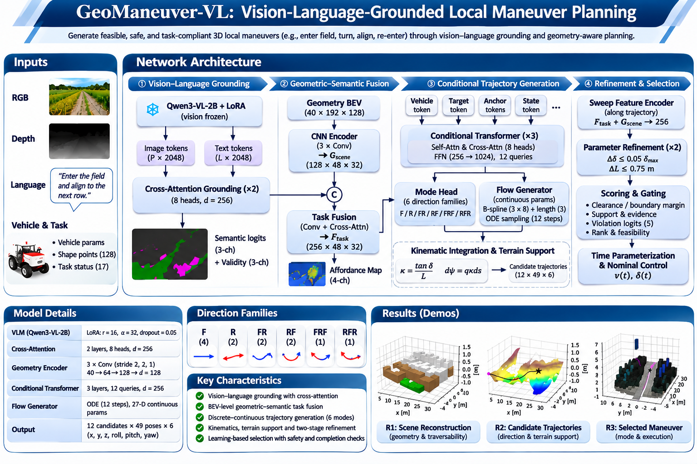

Network Architecture

GeoManeuver-VL connects RGB-D observations, task language, vehicle geometry and task state to generate 3D local maneuvers for field entry, turning, alignment and row re-entry.
Technical Contributions
Vision-language grounding and geometric fusion
Qwen3-VL-2B with LoRA and cross-attention grounds task language in visual observations. A geometry BEV encoder and task-fusion module combine semantic evidence, metric scene geometry and task information.
Conditional trajectory generation
A conditional Transformer predicts direction families and continuous trajectory parameters through a flow generator. Kinematic integration and terrain support convert these parameters into candidate 3D trajectories.
Iterative sweep-based refinement
A sweep feature encoder gathers task and scene information along each candidate. Two refinement stages adjust the trajectory parameters before scoring and gating consider clearance, boundary margins, support evidence and feasibility. Time parameterization produces nominal control commands.
Experimental Demonstrations
3D Terrain Representation

3D Trajectory Generation
3D Occupancy & Motion Planning

Manuscript under review. This page presents a project-level overview rather than a public release of the manuscript or its unpublished results.